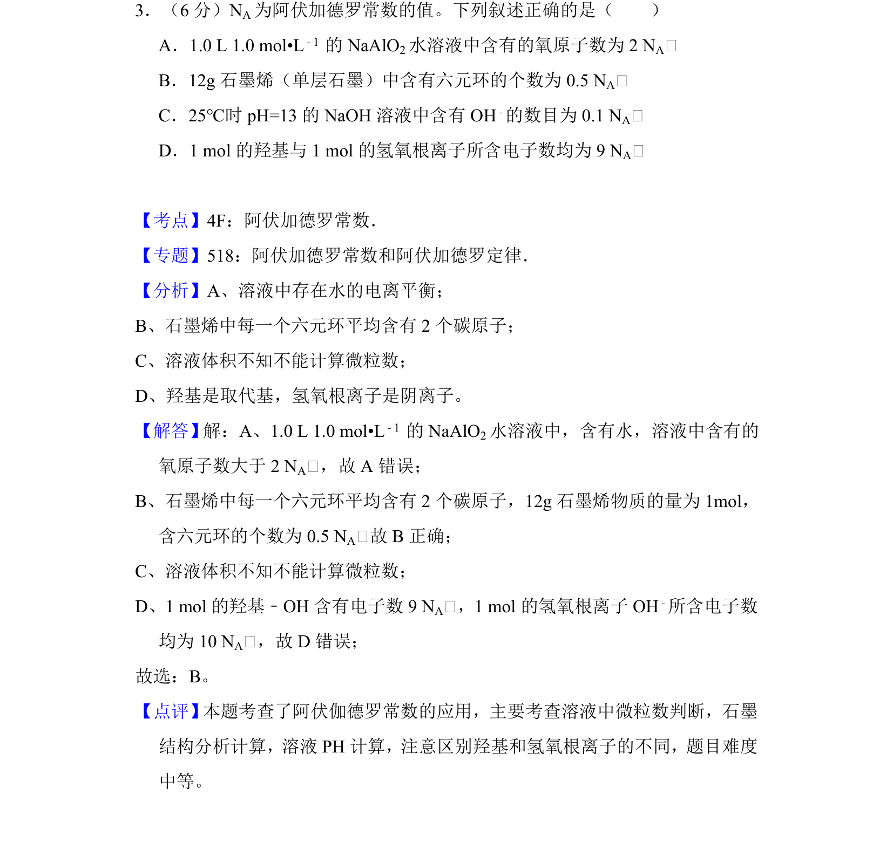
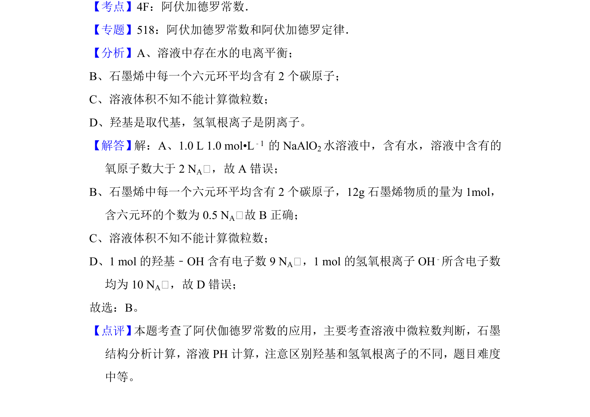

<!DOCTYPE html>
<html lang="zh-CN">
<head>
<meta charset="utf-8">
<meta name="viewport" content="width=device-width,initial-scale=1">
<title>2013-新课标Ⅱ-03</title>
<link rel="stylesheet" href="../../vendor/style.css">

<link rel="stylesheet" href="../../vendor/katex/katex.min.css">
<script defer src="../../vendor/katex/katex.min.js"></script>
<script defer src="../../vendor/katex/contrib/auto-render.min.js"
  onload="renderMathInElement(document.body,{
    delimiters:[
      {left:'$$',right:'$$',display:true},
      {left:'$',right:'$',display:false}
    ],
    throwOnError:false
  });"></script>

<script src="../../vendor/review.js" defer></script>

</head>
<body>
<div class="wrap">
<div class="nav"><a href="../../index.html">总览</a><a href="../../数学.html">数学</a><a href="../../物理.html">物理</a><a href="../../化学.html">化学</a><a href="../../生物.html">生物</a></div>
<h1>2013-新课标Ⅱ-03</h1><div class="review-mark" data-stem="2013-新课标Ⅱ-03"></div><div class="meta-card"><span><strong>吉林</strong>2013</span><span><strong>卷</strong>新课标Ⅱ</span><span><strong>不分</strong></span><span><strong>题</strong>3</span><span><strong>题型</strong>选择</span><span><strong>难</strong>中</span></div><p><strong>考点</strong>：<code>阿伏加德罗常数</code> <code>微粒数计算</code> <code>石墨烯结构</code> <code>羟基与氢氧根区别</code></p><h2>题面</h2>
<p></p>
<h2>摘要</h2>
<p>本题考查阿伏加德罗常数的应用，涉及溶液中微粒数、石墨结构、pH计算及粒子组成判断。</p>
<h2>关联考点</h2>
<ul>
<li><a class="dead" title="未收录">阿伏加德罗常数</a></li>
<li><a href="../../atoms/689-微粒数计算.html">微粒数计算</a></li>
<li><a href="../../atoms/798-石墨烯结构.html">石墨烯结构</a></li>
<li><a href="../../atoms/568-羟基与氢氧根区别.html">羟基与氢氧根区别</a></li>
</ul>
<h2>答案与解析</h2>
<p></p>
<blockquote>
<p>📄 原 PDF 第 3 页：<code>素材/真题/吉林/2008-2024·（吉林）化学高考真题/2013年高考化学试卷（新课标Ⅱ）（解析卷）.pdf</code></p>
</blockquote>
<!-- 题干文本-start -->
<h2>题干文本</h2>
<p>3．（6分）N A为阿伏加德罗常数的值。下列叙述正确的是（　　）
A．1.0 L 1.0 mol•L﹣1 的NaAlO 2水溶液中含有的氧原子数为2 N A￿
B．12g石墨烯（单层石墨）中含有六元环的个数为0.5 N A￿
C．25℃时pH=13的NaOH溶液中含有OH ﹣的数目为0.1 N A￿
D．1 mol的羟基与1 mol的氢氧根离子所含电子数均为9 N A￿</p>
<!-- 题干文本-end -->

<!-- 解析文本-start -->
<h2>解析文本</h2>
<p>【考点】4F：阿伏加德罗常数．菁优网版权所有
【专题】518：阿伏加德罗常数和阿伏加德罗定律．
【分析】A、溶液中存在水的电离平衡；
B、石墨烯中每一个六元环平均含有2个碳原子；
C、溶液体积不知不能计算微粒数；
D、羟基是取代基，氢氧根离子是阴离子。
【解答】解：A、1.0 L 1.0 mol•L﹣1 的NaAlO 2水溶液中，含有水，溶液中含有的
氧原子数大于2 N A￿，故A错误；
B、石墨烯中每一个六元环平均含有2个碳原子，12g石墨烯物质的量为1mol，
含六元环的个数为0.5 N A￿故B正确；
C、溶液体积不知不能计算微粒数；
D、1 mol的羟基﹣OH含有电子数9 N A￿，1 mol的氢氧根离子OH ﹣所含电子数
均为10 N A￿，故D错误；
故选：B。
【点评】 本题考查了阿伏伽德罗常数的应用，主要考查溶液中微粒数判断，石墨
结构分析计算，溶液PH计算，注意区别羟基和氢氧根离子的不同，题目难度
中等。</p>
<!-- 解析文本-end -->
</div>
</body>
</html>